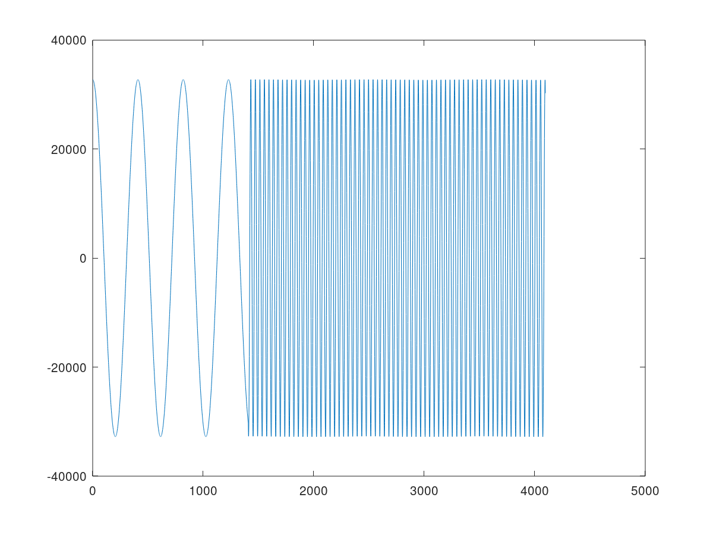

This example demonstrates how to declare an asynchronous runtime parameter. Once an asynchronous runtime parameter is triggered for the first time, the kernel will start to execute and will continue to execute for many iterations without waiting for the next trigger. The value of the asynchronous runtime parameter remains the same until the next trigger updates the value.
The example is similar to Synchronous Update of Scalar RTP, with the exception of the code to handle the asynchronous runtime parameter.
Note: The default working directory in this step is step2, unless specified explicitly otherwise.
Open aie/graph.h. Examine the code to connect the trigger input port of the graph to the first input port of the dds kernel (i.e., the phase_increment parameter of the sine function).
//connect asynchronous runtime parameter
adf::connect<adf::parameter>(trigger, adf::async(dds.in[0]));
Note: You need to use adf::async to indicate that the first port (phase_increment parameter) of the dds kernel will be updated asynchronously.
Open aie/graph.cpp. Check the code that first updates the trigger input port of the graph has the value 10 in the ping buffer. Then run it for two iterations. Wait for the two iterations to complete, then update the trigger input port of the graph with the value 100 in the pong buffer. Run it for another two iterations and then end.
gr.init();
// asynchronous RTP trigger calls
gr.update(gr.trigger,10);
gr.run(2);
gr.wait();
gr.update(gr.trigger,100);
gr.run(2);
gr.end();
Notice that using this code, the result is the same as that in the example given in step 1, but they are in different control modes. In synchronous RTP mode, the graph run is implicitly controlled by the RTP update, while in asynchronous RTP mode, the “_wait()_” function is used to explictly wait the graph running to be completed. In asynchronous RTP mode, there is no guarantee when the RTP update will be effective while the graph is running.
Run the following make command to compile the design graph (libadf.a):
make aie
Run the following make command to launch the AI Engine simulator:
make aiesim
After simulation, check the output data by running the following commands:
grep -v T aiesimulator_output/data/output.txt > aiesimulator_output/data/output_data.txt
diff -w aiesimulator_output/data/output_data.txt ./data/golden.txt
To explore how asynchronous RTP updates are effective, you can replace the code in the main() function of aie/graph.cpp with the following code (do this manually):
gr.init();
gr.run();
gr.update(gr.trigger,10);
gr.wait(/*timeout cycles=*/5000);
gr.update(gr.trigger,100);
gr.resume();
gr.end(/*timeout cycles=*/10000);
In this code, the graph is set up to run forever. However, after the run API is called, it will still block the first update for parameter initialization. Then, it will run for 5000 cycles (approximately) before allowing the control thread to make another update. The new update will take effect at the next kernel invocation boundary. Then the graph is allowed to run for another
10,000 cycles before terminating.
Run the AI Engine simulator and trim the timestamps from the output data file:
make aiesim
grep -v T aiesimulator_output/data/output.txt > aiesimulator_output/data/output_data.txt
Then plot the data (only the real part) using the following commands in Octave:
data=load("aiesimulator_output/data/output_data.txt")
plot(data(:,1))

You can change the timeout cycle numbers in different runs and plot output data to observe how aynchronous RTP updates work.
The Makefile rule targets introduced in Synchronous Update of Scalar RTP still apply here. However, you can run the following make command to compile and build all the dependent files for the package (this is for hw_emu):
make package
For hw mode, run the following command:
make package TARGET=hw
After the package step, run hardware emulation using the following command:
make run_hw_emu
In the Linux prompt, run following commands:
mount /dev/mmcblk0p1 /mnt
cd /mnt
export XILINX_XRT=/usr
export XCL_EMULATION_MODE=hw_emu
./host.exe a.xclbin
To exit QEMU press Ctrl+A, x
Alternatively, to run in hardware, after booting Linux from an SD card, run the following commands in the Linux prompt:
export XILINX_XRT=/usr
cd /mnt/sd-mmcblk0p1
./host.exe a.xclbin
The host code is self-checking. It will check the output data against the golden data. If the output data matches the golden data after the run is complete, it will print the following:
TEST PASSED
In this step, you learned learned about the core concepts of asynchronous update of scalar RTP, and how to control the execution between different RTP updates.
Next, review Asynchronous Update of Array RTP.
==========
GitHub issues will be used for tracking requests and bugs. For questions go to forums.xilinx.com.
Licensed under the Apache License, Version 2.0 (the “License”); you may not use this file except in compliance with the License.
You may obtain a copy of the License at http://www.apache.org/licenses/LICENSE-2.0
Unless required by applicable law or agreed to in writing, software distributed under the License is distributed on an “AS IS” BASIS, WITHOUT WARRANTIES OR CONDITIONS OF ANY KIND, either express or implied. See the License for the specific language governing permissions and limitations under the License.
XD001 | © Copyright 2020-2021 Xilinx, Inc.